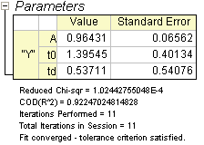

Mit Origin können Anwender eine Origin C-Anpassungsfunktion mit Hilfe von speziellen NAG-Funktionen definieren. Sie können die NAG-Routine aufrufen, um die Spezialfunktion zu bewerten.
Origin-Version mind. erforderlich: 8.0 SR6
Dieses Tutorial zeigt Ihnen, wie Sie:
Wir passen das folgende Modell an:
Hier sind A, td und t0 die Modellparameter, die wir aus der Datenanpassung erhalten. I0 und I1 sind jeweils die erste Art der modifizierten Bessel-Funktion der Ordnung 0 bzw. Ordnung 1. Für das aktuelle Beispiel verwenden wir die Beispieldaten am Ende dieses Tutorials. Der Anpassungsprozess kann in den folgenden Schritten zusammengefasst werden:
Drücken Sie F9, um den Fit-Funktions-Manager zu öffnen und dann eine neue Kategorie mit dem Namen FittingWithNAGSpecialFunc zu erstellen. Definieren Sie eine neue Anpassungsfunktion FittingWithBessel in der neuen Kategorie:
| Funktionsname: | FittingWithBessel |
| Funktionstyp: | Benutzerdefiniert |
| Unabhängige Variable: | t |
| Abhängige Variable: | inorm |
| Parameternamen: | A,t0,td |
| Funktionsform: | Origin C |
| Funktion: |
Klicken Sie auf die Schaltfläche (Symbol) neben dem Feld Funktion, um den Code Builder zu öffnen und die Anpassungsfunktion wie folgt zu definieren, zu kompilieren und zu speichern:
#include <origin.h> // Add your special include files here. // For example, if you want to fit with functions from the NAG library, // add the header file for the NAG functions here. #include <OC_nag8.h> // Add code here for other Origin C functions that you want to define in this file, // and access in your fitting function. // You can access C functions defined in other files, if those files are loaded and compiled // in your workspace, and the functions have been prototyped in a header file that you have // included above. // You can access NLSF object methods and properties directly in your function code. // You should follow C-language syntax in defining your function. // For instance, if your parameter name is P1, you cannot use p1 in your function code. // When using fractions, remember that integer division such as 1/2 is equal to 0, and not 0.5 // Use 0.5 or 1/2.0 to get the correct value. // For more information and examples, please refer to the "User-Defined Fitting Function" // section of the Origin Help file. //---------------------------------------------------------- // void _nlsfFittingWithBessel( // Fit Parameter(s): double A, double t0, double td, // Independent Variable(s): double t, // Dependent Variable(s): double& inorm) { // Beginning of editable part //inorm= A* exp(-td/2,0/(t-t0)) * ( s18aec(td/2,0/(t-t0),NAGERR_DEFAULT)+s18afc(td/2,0/(t-t0),NAGERR_DEFAULT) ); static NagError fail1; static NagError fail2; double dtemp = td/2,0/(t-t0); inorm= A* exp(-dtemp) * ( s18aec(dtemp,&fail1)+s18afc(dtemp,&fail2) ); if(fail1.code !=NE_NOERROR) printf("%s\n",fail1.message); if(fail2.code !=NE_NOERROR) printf("%s\n",fail1.message); // End of editable part }
Nachdem der Funktionskörper definiert ist, können Sie auf die Schaltfläche Kompilieren im Code Builder klicken, um Syntaxfehler zu überprüfen. Klicken Sie dann auf die Schaltfläche Zum Dialog zurückkehren, um zum Dialogfeld Fit-Funktions-Manager zurückzukehren. Klicken Sie jetzt auf die Schaltfläche Speichern, um die .FDF-Datei (Funktionsdefinitionsdatei) zu erzeugen.
Sobald Sie eine .FDF-Datei haben, können Sie auf die Schaltfläche Simulieren klicken, um eine Kurve zu simulieren. Dies ist bei der Bewertung der Initialisierungswerte sehr hilfreich. Geben Sie im Dialogfeld simcurve einige entsprechende Parameterwerte und den X-Bereich ein und sehen Sie im Vorschaufeld, wie die Kurve aussehen wird.
Da es sich um eine benutzerdefinierte Anpassungsfunktion handelt, müssen Sie die Intialisierungsschätzwerte für die Parameter zur Verfügung stellen, bevor Sie Ihre Anpassung für die Daten durchführen. Sie können dies tun, indem Sie sie manuell auf der Registerkarte Parameter im Dialogfeld Nichtlinearer Fit einstellen. Für die unten gezeigten Beispieldaten können Sie die Initialisierungswerte für die Parameter A = 1, td = 1, t0 = 1 setzen. Nachdem die Parameter initialisiert worden sind, können Sie die Anpassung durchführen, um das Anpassungsergebnis zu erhalten wie rechts neben den Beispieldaten gezeigt.
Kopieren Sie unten die Beispieldaten und verwenden Sie den Importassistenten, um die Daten aus der Zwischenablage zu importieren. Führen Sie dann die Anpassung mit Hilfe der gegebenen Initialisierungswerte für die Parameter durch: A = 1, td = 1, t0 = 1.
| Beispieldaten | Ergebnisse | ||||||||||||||||||||||
|---|---|---|---|---|---|---|---|---|---|---|---|---|---|---|---|---|---|---|---|---|---|---|---|
|
 |